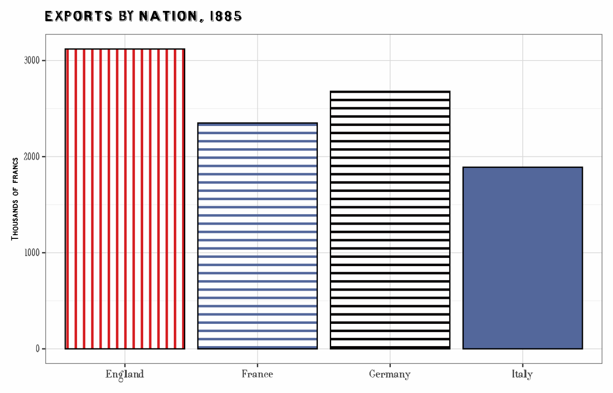
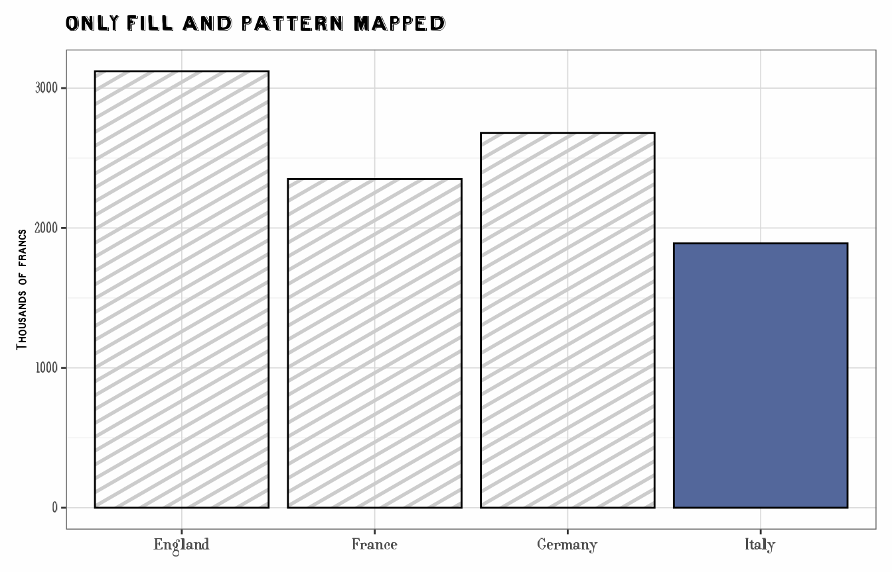
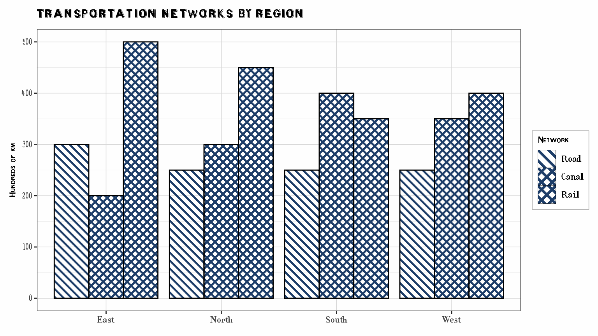
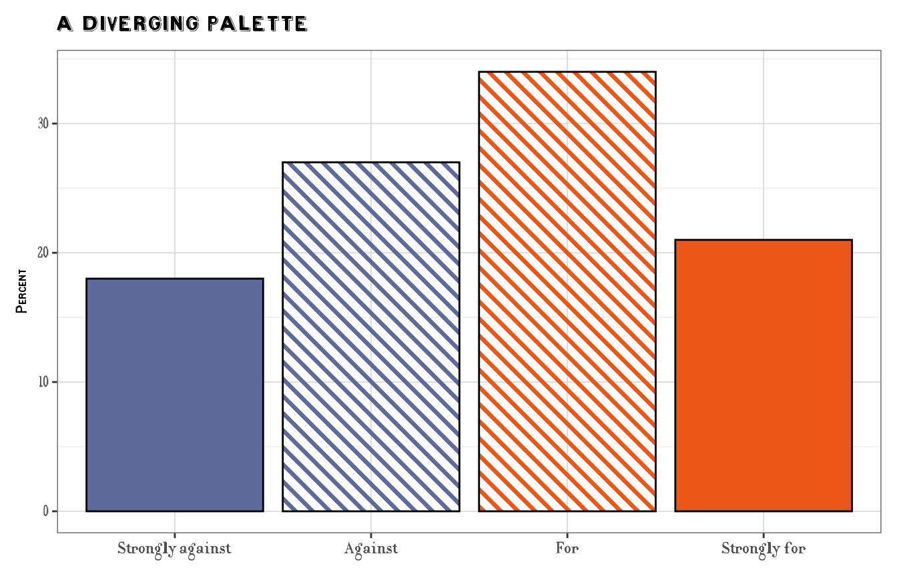
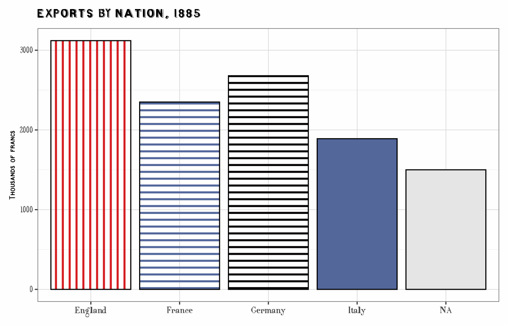
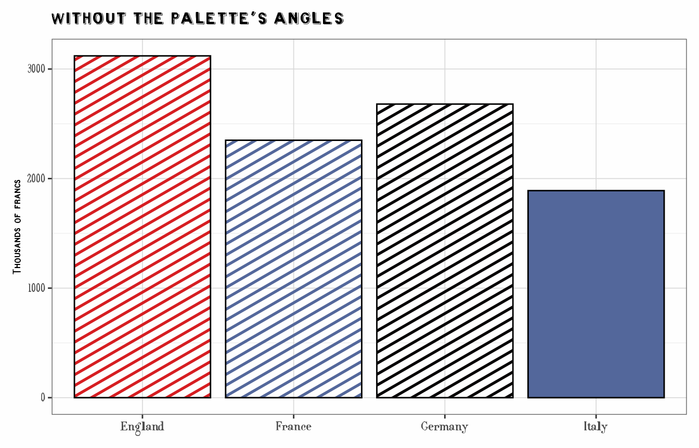

Combining Colors and Patterns
Michael Friendly
2026-09-28
Source:vignettes/combining-colors-patterns.Rmd
combining-colors-patterns.RmdExperimental. The functions described here,
scale_cheysson() and aes_cheysson(), are new
in ggCheysson 1.1.0, and their interface may change in a future
version.
Palettes that combine color and hatching
In the Albums de Statistique Graphique, a class on a map or a bar in a chart was rarely distinguished by color alone. Cheysson’s palettes combine colors with hatching: solid fills, stripes at different angles and spacings, and crosshatching, sometimes in two colors.
Each element of a palette in cheysson_patterns is
therefore a small bundle of properties. Here are the six elements of
palette 1886_28:
pats <- cheysson_pattern("1886_28")
data.frame(
pattern = cheysson_pattern_params(pats, "pattern_type"),
fill = cheysson_pattern_params(pats, "fill"),
pattern_fill = cheysson_pattern_params(pats, "pattern_fill"),
pattern_fill2 = cheysson_pattern_params(pats, "pattern_fill2"),
pattern_angle = cheysson_pattern_params(pats, "pattern_angle")
)
#> pattern fill pattern_fill pattern_fill2 pattern_angle
#> 1 stripe transparent #d61d21 #d61d21 90
#> 2 stripe transparent #53679b #53679b 0
#> 3 stripe transparent #060304 #060304 0
#> 4 none #53679b #53679b #53679b 45
#> 5 none #d61d21 #d61d21 #d61d21 45
#> 6 none #060304 #060304 #060304 45-
pattern: the hatch type,"none"for a solid fill -
fill: the paper or fill color behind the hatching ("transparent"for hatching on bare paper) -
pattern_fill: the color of the hatch lines -
pattern_fill2: the color of a crosshatch’s second set of lines (the same aspattern_fillexcept in two-color crosshatches) -
pattern_angle: the angle of the lines
The long way: one mapping and one scale per property
In ggplot2 with ggpattern, each of these
properties is a separate aesthetic. To apply a palette to a variable,
each aesthetic needs both a mapping in
aes() and a scale that supplies its
values:
trade <- data.frame(
country = c("France", "England", "Germany", "Italy"),
exports = c(2350, 3120, 2680, 1890)
)
ggplot(trade, aes(country, exports)) +
geom_col_pattern(
aes(fill = country, pattern = country, pattern_fill = country,
pattern_fill2 = country, pattern_angle = country),
pattern_colour = NA, pattern_density = 0.3, pattern_spacing = 0.025,
colour = "black"
) +
scale_fill_cheysson_pattern("1886_28") +
scale_pattern_type_cheysson("1886_28") +
scale_pattern_fill_cheysson("1886_28") +
scale_pattern_fill2_cheysson("1886_28") +
scale_pattern_angle_cheysson("1886_28") +
labs(title = "Exports by Nation, 1885", x = NULL, y = "Thousands of francs") +
theme_cheysson() +
theme(legend.position = "none")
The short way: aes_cheysson() and
scale_cheysson()
Two functions collapse the five mappings and the five scales to one line each:
-
aes_cheysson(country)mapscountryto all five aesthetics. Other mappings can be given as further arguments, e.g.aes_cheysson(country, x = year, y = value). -
scale_cheysson("1886_28")returns the five scales as a list, which+adds to the plot in one step. All of them take their values from the same palette elements, so each level ofcountrygets one complete historical swatch.
This draws the same plot as above:
ggplot(trade, aes(country, exports)) +
geom_col_pattern(
aes_cheysson(country),
pattern_colour = NA, pattern_density = 0.3, pattern_spacing = 0.025,
colour = "black"
) +
scale_cheysson("1886_28") +
labs(title = "Exports by Nation, 1885", x = NULL, y = "Thousands of francs") +
theme_cheysson() +
theme(legend.position = "none")
Settings that are better fixed than mapped stay in the geom:
pattern_density and pattern_spacing (how thick
and how close the lines are), pattern_colour = NA (no
outlines around the hatch lines), and the outline
colour.
Why both are needed
A scale does nothing for an aesthetic the plot doesn’t map. Here only
fill and pattern are mapped, so
scale_cheysson()’s other scales have no effect, and
ggpattern falls back to its default grey hatch lines and
angle:
ggplot(trade, aes(country, exports, fill = country, pattern = country)) +
geom_col_pattern(pattern_colour = NA, pattern_density = 0.3, pattern_spacing = 0.025,
colour = "black") +
scale_cheysson("1886_28") +
labs(title = "Only fill and pattern mapped", x = NULL, y = "Thousands of francs") +
theme_cheysson() +
theme(legend.position = "none")
Legends
Arguments to scale_cheysson() such as name
and labels are passed to every scale. With the same title,
ggplot2 merges the legends of all the aesthetics into one,
whose keys show the full swatches. Here a sequential palette,
1881_12, whose three steps are hatchings of increasing
density in a single color, distinguishes three kinds of transport:
infrastructure <- data.frame(
region = rep(c("North", "South", "East", "West"), each = 3),
type = factor(rep(c("Road", "Canal", "Rail"), 4), levels = c("Road", "Canal", "Rail")),
length = c(250, 300, 450, 250, 400, 350, 300, 200, 500, 250, 350, 400)
)
ggplot(infrastructure, aes(region, length)) +
geom_col_pattern(
aes_cheysson(type),
position = "dodge",
pattern_colour = NA, pattern_density = 0.35, pattern_spacing = 0.02,
colour = "black"
) +
scale_cheysson("1881_12", name = "Network") +
labs(title = "Transportation Networks by Region", x = NULL, y = "Hundreds of km") +
theme_cheysson()
Ordered data: sequential and diverging palettes
Sequential palettes are stored from low to high (light to dark), and
diverging palettes from one extreme through the middle to the other, so
reverse = TRUE flips every palette the same way. When the
data have fewer levels than the palette has elements, the scales pick
elements spread over the whole palette, keeping both ends.
Palette 1883_31 is diverging: two hues, each used solid
and hatched. As in Cheysson’s maps, the solid fills mark the extremes
and the hatched versions the milder classes:
opinion <- data.frame(
response = factor(c("Strongly against", "Against", "For", "Strongly for"),
levels = c("Strongly against", "Against", "For", "Strongly for")),
percent = c(18, 27, 34, 21)
)
ggplot(opinion, aes(response, percent)) +
geom_col_pattern(
aes_cheysson(response),
pattern_colour = NA, pattern_density = 0.35, pattern_spacing = 0.025,
colour = "black"
) +
scale_cheysson("1883_31") +
labs(title = "A Diverging Palette", x = NULL, y = "Percent") +
theme_cheysson() +
theme(legend.position = "none")
Missing values
Missing values get no hatching and a plain fill, set by
na.value (default "grey80"):
trade_na <- rbind(trade, data.frame(country = NA, exports = 1500))
ggplot(trade_na, aes(country, exports)) +
geom_col_pattern(
aes_cheysson(country),
pattern_colour = NA, pattern_density = 0.3, pattern_spacing = 0.025,
colour = "black"
) +
scale_cheysson("1886_28", na.value = "grey90") +
labs(title = "Exports by Nation, 1885", x = NULL, y = "Thousands of francs") +
theme_cheysson() +
theme(legend.position = "none")
Applying only some aesthetics
To use only some of the palette’s properties, choose them with
aesthetics, and map only those. Here the bars keep the
palette’s hatch types and line colors, but not its angles:
ggplot(trade, aes(country, exports, fill = country, pattern = country,
pattern_fill = country)) +
geom_col_pattern(pattern_colour = NA, pattern_density = 0.3, pattern_spacing = 0.025,
colour = "black") +
scale_cheysson("1886_28", aesthetics = c("fill", "pattern", "pattern_fill")) +
labs(title = "Without the palette's angles", x = NULL, y = "Thousands of francs") +
theme_cheysson() +
theme(legend.position = "none")
The individual scales, scale_fill_cheysson_pattern() and
the scale_pattern_*_cheysson() family, remain available for
full control over each aesthetic.
What is not included
-
pattern_densityandpattern_spacingare not mapped byaes_cheysson()or set byscale_cheysson(). The palettes’ spacings were measured on Cheysson’s small swatches and need rescaling for a full-size plot; see the literacy map invignette("guerry-maps", package = "ggCheysson")for mappingpattern_spacingwithscale_pattern_spacing_manual(). - The scales are discrete. For continuous data, cut it into classes first, as Cheysson did.
- For plots without patterns (
geom_col(),geom_point(), …), usescale_fill_cheysson()andscale_color_cheysson(), which use the palettes’ colors only.